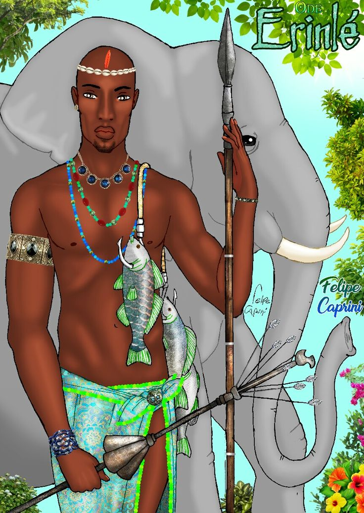
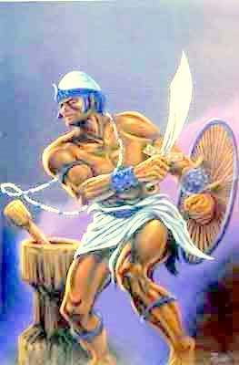
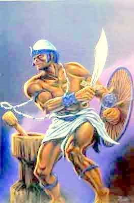

Outros deuses
Aganju
Orixá dos vulcões e do fogo

Erinlé
Faz parte do grupo dos orixás caçadores
Iewá
Orixá da beleza
Ibejis
São dois orixás gêmeos, responsáveis por proteger as crianças.
Logun Ede
Orixá da pesca e da caça
Obá
Representa a fidelidade conjugal e o amor.
Obaluaê
Orixá das pestes e das doenças contagiosas
Odudua
Orixá responsável pela criação da Terra
Onilé
Orixá que governa a Terra
Okê
Orixá da montanha
 Orunmilá
Orixá da adivinhação e do oráculo
Oraniã
Orixá das profundezas da Terra
Orunmilá
Orixá da adivinhação e do oráculo
Oraniã
Orixá das profundezas da Terra
 Ossaim
Orixá das folhas
Otim
Orixá do rio Otin

Oxanguiã
Orixá da criação, o criador da cultura material
Ossaim
Orixá das folhas
Otim
Orixá do rio Otin

Oxanguiã
Orixá da criação, o criador da cultura material
 Oxóssi
Orixá da caça
Oxumarê
Orixá do arco-íris
Oxóssi
Orixá da caça
Oxumarê
Orixá do arco-íris